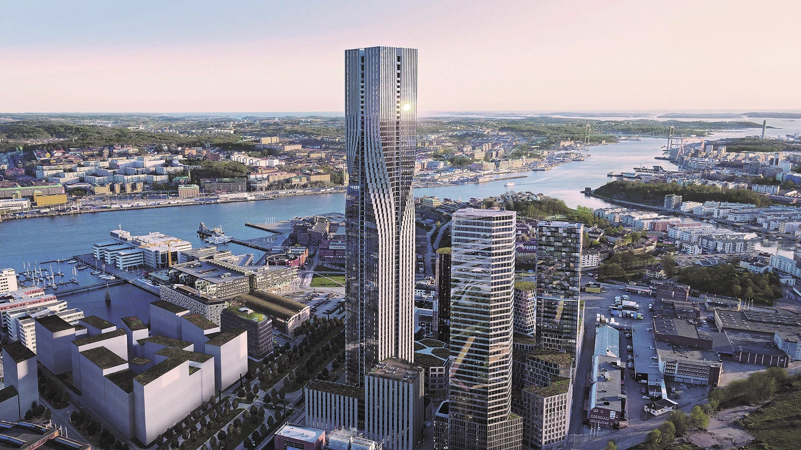
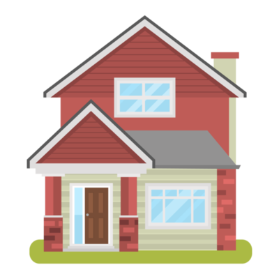

Om vårt företag
Från vision till verklighet
NAD – Nordic Architect
Design
är en modern arkitektbyrå med rötter i den nordiska
designtraditionen.
Företaget kombinerar funktionalitet, estetik och hållbarhet för att skapa arkitektur som inte bara
är vacker, utan också meningsfull och långsiktig. Vår filosofi bygger på att arkitektur ska
förbättra människors livskvalitet, stärka gemenskap och samtidigt respektera naturens resurser.
Vi arbetar med en bred palett av projekt, från bostäder och kontor till offentliga byggnader och stadsplanering. Varje uppdrag är unikt och vi strävar alltid efter att förstå kundens vision och behov i detalj. Genom nära dialog, kreativa processer och en stark känsla för detaljer skapar vi lösningar som överträffar förväntningar.
Från arkitektur med nordisk prägel
Hållbarhet är en central del i allt vi gör. Vi använder miljövänliga material, energieffektiva lösningar och innovativ teknik för att minimera klimatpåverkan. Vår designprocess bygger på att kombinera traditionella byggnadstekniker med modern digital modellering, vilket gör det möjligt för oss att visualisera idéer tidigt och ge våra kunder en tydlig bild av slutresultatet.
Nordic Architect Design består av ett multidisciplinärt team av arkitekter, ingenjörer, inredningsdesigners och landskapsarkitekter. Denna bredd gör att vi kan ta oss an komplexa projekt där alla delar av arkitekturen samspelar – från byggnadens form och inredning till dess plats i landskapet. Med en passion för innovation och en respekt för det nordiska arvet vill NAD bidra till framtidens hållbara städer och inspirerande livsmiljöer. Vår vision är enkel men kraftfull: att skapa arkitektur som förenar människor, natur och funktion i en harmonisk helhet.